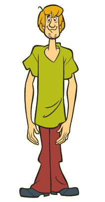

| Scooby-Doo | Shaggy | Velma | Freddie | Daphne |
|---|---|---|---|---|
|  | |
|
|
|
| The Great Dane mascot of Mystery Inc. | The owner and best friend of Scooby-Doo | The genius of Mystery Inc. | The leader of the Mystery Inc. | The fashion-loving member of Mystery Inc. |
| Episode | Title | Villan | Identity of the Villain | Original air date |
|---|---|---|---|---|
| 1 | "What a Night for a Knight" | Black Knight | Mr. Wickles | September 13, 1969 |
| 2 | "A Clue for Scooby-Doo" | Captain Cutler | Captain Cutler | September 20, 1969 |
| 3 | "Hassle in the Castle" | The Ghost | Bluestone the Great | September 27, 1969 |
| 4 | "Mine Your Own Business" | Miner 49er | Hank Buds the Caretaker | October 4, 1969 |
| 5 | "Decoy for a Dognapper" | Indian Witch Doctor | Buck Masters | October 11, 1969 |
| 6 | "What the Hex Going On?" | Elias Kingston | Stuart Wetherby | October 18, 1969 |
| 7 | "Never Ape an Ape Man" | Ape Man | Carl Stunter | October 25, 1969 |
| 8 | "Foul Play in Funland" | Robot | Charlie the Robot and Sarah Jenkins | November 1, 1969 |
| 9 | "Backstage Rage" | The Puppet Master | Mr. Pietro | November 8, 1969 |
| 10 | "Bedlam in the Big Top" | The Clown Ghost | Harry the Hypnotist | November 15, 1969 |